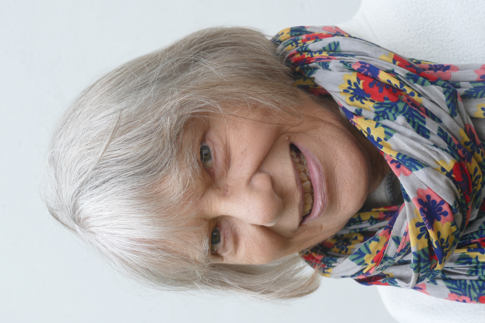
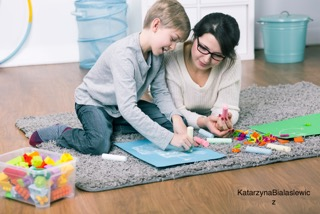

My Background
Angela Greenwood Educational Psychotherapist

I am an Educational Psychotherapist registered with the United Kingdom Council for Psychotherapy (UKCP). I have many years experience working with children, families, schools and school staff, including clinical work with children whose learning and behaviour have been adversely affected by social and environmental factors. I have also done the level one Dan Hughes (‘Attachment Focused Family Therapy’) training, and the Theraplay level one training.
Educational Psychotherapy (sometimes known as Educational Therapy) is a clinical child psychotherapy training with a particular interest in children whose learning and behaviour is affected by emotional factors.
Experience: —
- Primary teaching and Pre-school development work in England and Zambia
- School Special Educational Needs Co-ordinator in a ‘deprived’ primary school for 16 years

- Educational Psychotherapist with the SWANS project, where we offered psychotherapy to children affected by domestic violence, in parallel with their mothers receiving their own counselling and support. This sometimes involved multi-disciplinary and consultative work
- Individual Educational Psychotherapy with many children over 18 years
- Multi faceted work with adoptive families and the childrens’ schools
- In-service training and other training courses with school staff and other professionals in Southend, at the Sycamore Child Counselling Training in Chelmsford, at Caspari Foundation in London and at Brighton University
- Consultation and clinical supervision with teachers and other professionals
- Consultation, clinical staff supervision, individual psychotherapy, detailed assessments and INSET at a pupil referral unit for 4 years
- INSET, planning and work discussion group leading at a local teachers support group, counselling support group and the local Nurture Group Network
- Joint therapeutic work with an adult psychotherapist, with families with complex difficulties
- Writing and co-facilitating ‘Safe to Learn’ courses for teachers
- Attachment lectures at Caspari Foundation and at various University departments